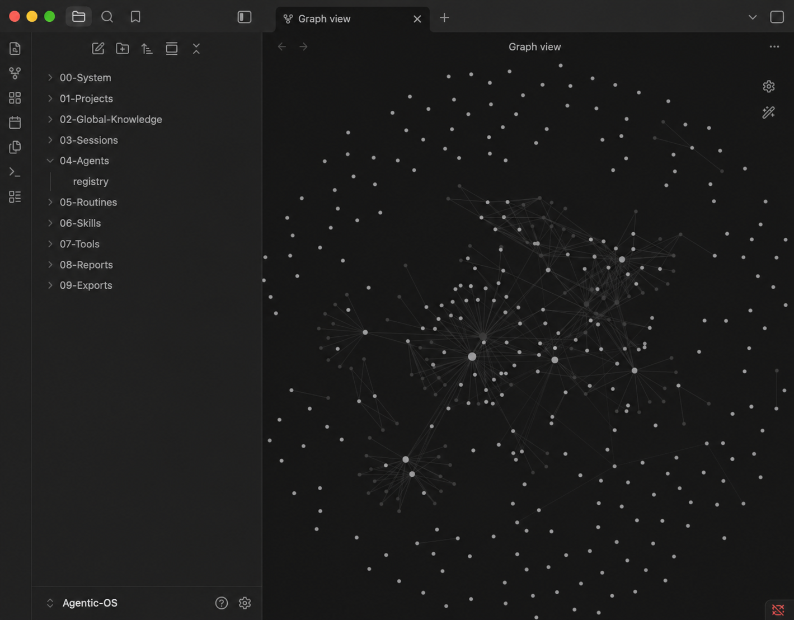

01 · Obsidian memory
پروژهها و تصمیمها در Vault محلی میمانند.
Projects and decisions remain in your local Vault.
این نسخهی پشتیبان و بدون Tracking است. سیستم روی Obsidian اجرا میشود، Agentها را به یک حافظه وصل میکند و Dashboard را با دادههای خودتان بهروز میکند.
This is the tracking-free fallback guide. The system runs on Obsidian, connects agents to one memory layer, and refreshes the dashboard from your own data.